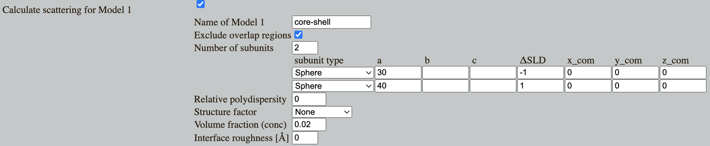

Home
Tutotial: Pair distance distribution, p(r)
Tutorial contributors: Andreas Haahr Larsen
Frontpage image from Larsen 2018 (PhD Thesis)
Learning outcomes
- Learn to use and interpret the pair distance distributions.
Introductory remarks
SAS data is measured in "reciprocal space", i.e. as funciton of 1/length. By a Fourier transformation, one can get a distribution of distances between scattering pairs in the sample (weighted by contrast): the pair distance distribuion or simply the "p(r)" (colloquially denoted the "p-of-r-function").
The p(r) is in "real space", i.e. as function of length, so it can be interpreted more intuitively than the data itself. The p(r) provides useful structural information about the sample prior to any modelling.
Part 1: Fourier tranformation
In this part you will understand the basics math of Fourier tranformation that is used to generate the pair distance distribution from SAS data
In order to understand the basics, solve excersizes at pan-learning.org
These are simple 1D examples, but the math is the same for more realistic samples.
Note that a p(r) is generated by an Indirect Fourier transformation, but the details of this will not be covered here.
Part 2: Pair distribution function for various shapes
Go to: Shape2SAS, and simulate a sphere with radius of 50 Å as Model 1 and a 30 Å sphere as Model 2.
Could you guess the shape (sphere) directly from the p(r)? Notice the inverse relationship with the scattering: large R -> features at low q. How would the p(r) look for an ellipsoid? or a cylinder? Try to calculate the p(r) for various shapes.
Part 3: Pair distribution function from SAXS/SANS data
Download the simulated data of the sphere with radius of 50 Å, which you generated with Shape2SAS. (example data)
Go to BayesApp, which is a web-application for generating pair distance distributions for SAXS and SANS data.
Upload your simulated data, give an estimate of the maximum distance (giving an estimate of the maximum distance is optional, but makes BayesApp faster and more robust). Press submit
The program shows the calculated p(r), and a fit to the data, which was used to generate this p(r).
Go to the SAS biological data bank (SASBDB) and download the SAXS data of the protein Xylanase (SASBDB entry SASDPS4): SASDPS4.dat
Use BayesApp to calculate the p(r) (optionally provide an estimate of the maximum distance).
Comment on the resulting p(r) and compare with the shape of the protein as seen at the SASBDB entry.
Part 4: Inhomogeneous particles
The p(r) is a contrast-weighted pair distribution (contrast = ΔSLD = excess scattering length density). I.e. each bin in the distribution is the weighted sum of all pairs with a given distance.
Therefore, if a pair of scatterers have contrasts with the same sign, then they contribute positively, but if the signs are opposite, then their contribution to the p(r) is negative. This means that the p(r) can have negative values
Go to Shape2SAS, and simulate a core-shell sphere with inner radius 40 Å and outer radius 50 Å and with core ΔSLD of -1 and shell ΔSLD of +1 
What scattering pairs does the negative part of the p(r) represent? What distances do the two positive parts of the p(r) represent? The forward scattering I(0) is about 0. How does that relate to the p(r)? (Hint)
Download the simulated data (example data) and upload it to BayesApp. Give an estimate of the maximum distance and press Submit.
Set the tranformation to Negative (to allow p(r) to be negative). Per default, BayesApp uses a positivety constraint, but that should be disabled here.
Compare with the true p(r) (in Shape2SAS). You may want to run BayesApp with positive constraint (default), just to see it fail.
Part 5: Protein aggregation
Protein aggregation in a sample may be detected using p(r) - in reveals itself as a "tail" towards high values of r.
Go to Shape2SAS, and simulate a 50 Å sphere (or any other object) with aggregate structure factor (set fraction to 0.005, i.e. 0.5% of all particles are aggregated and particles per aggregate to 40).
OBS: The p(r) shown in Shape2SAS is for the spheres without the structure factor.
Download the data (example data) and calculate the p(r) with BayesApp. (The default number of points in p(r) may need to be increased). Notice the "tail":